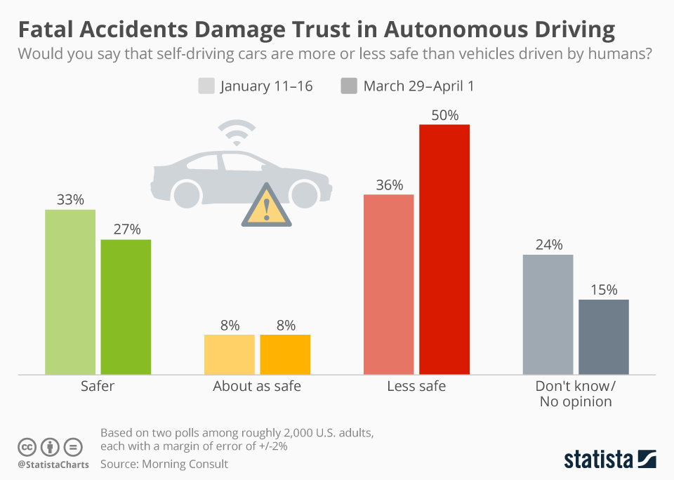

Risks
Autonomous vehicles can vary in their ability to operate autonomously. Most current vehicles, such as Teslas, are defined by the Society of Automotive Engineers as level 2 autonomous vehicles, meaning “partial driving automation”. Looking at data from Tesla, their autopilot-based cars seem to have low rates of crashes, with the rates of crashes per miles driven being 2-3x lower when autopilot is engaged (Tesla Vehicle Safety…, n.d.). This sets a good precedent for autonomous vehicles being safer than human-controlled cars.
Figure 2
Note. Fatal Accidents Damage Trust in Autonomous Driving in 2018. From Fatal Accidents Damage Trust in Autonomous Driving.by Statista, 2018.( https://www.statista.com/chart/13450/perceived-safety-of-self-driving-cars/).
The most evident risk pertaining to autonomous vehicles is that in the end, the software driving the cars was created by humans. This could lead to any number of issues considering that humans naturally make mistakes. For example, a poorly programmed or poorly trained AI has the potential to make mistakes. Generally, due to regulations and companies not wanting to be responsible for accidents, we could expect that software errors would be minimal, however the human aspect largely means that the chance of error will almost never be zero. As mentioned, most bugs will be ironed out during testing and development phases, but there is a chance that edge cases could remain undetected for long periods of time, only being discovered when they cause an accident. The argument as to whether this is really an issue is still up for debate. Anyone thinking about this topic could expect that people would argue both ways, some will claim that the risk presented even by edge cases pales in comparison to the risk presented by drivers. Others may be more sceptical of the efficacy of autonomous vehicle programs, due to the sheer number of edge cases presented to us on the road.
(Shwartz, 2021) examines the evidence for self-driving cars being safer than humans. He provides many arguments, however the main ones are relating to the issues regarding testing and regulation of autonomous vehicles. He argues that in many cases in the USA, regulations are not strict enough, and give companies leeway to provide poor quality autonomous vehicles which cause accidents. He writes “Florida statute 316.85 specifically allows the operation of autonomous vehicles and explicitly states that a driver does not need to pay attention to the road in a self-driving vehicle (e.g., the driver can watch movies). It also explicitly permits autonomous vehicle operation without a driver even present in the vehicle. And there are no requirements for manufacturers to pass safety tests beyond the requirements that were in place prior to self-driving capabilities. Whenever a car, truck, bus, or taxi company decides they are ready, they are free to test and sell driverless vehicles.” Shwartz provides an example of this idea, where he argues that Tesla had not adequately tested their vehicle, resulting in an accident. The example is of a Tesla which’s software malfunctioned and caused an accident while the vehicle was travelling 70mph (112km/h). The front facing sensors on the car failed, meaning that the software didn’t detect a tractor-trailer in front of the car, and thus the automatic braking never applied, and the car crashed. Shwartz also brings up the ‘edge cases’ argument, which is that humans have common-sense reasoning, and AI software doesn’t. Due to the fact that this ability can’t be programmed into something, it’s argued that humans have the edge over cars because of our ability to react and respond to novel occurrences. Cars, on the other hand, have to have every possible situation programmed into them. Therefore, there are two important tests which need to be carried out upon autonomous vehicles to ensure they’re safe for real-world use. Firstly, that they can respond adequately to situations they’ve already been programmed for, but secondly, and more relevantly, that autonomous vehicles can respond to new situations which they haven’t been programmed for. Shwartz presents one such solution to this problem, where level 4 (almost fully autonomous) vehicles are driven around with a ‘safety driver’, whose role is to take over in the event of an emergency. The fact that the driver had to take over is then counted as an accident. This allows autonomous vehicle developers to gather data on edge cases without actually having to have accidents happen.
The argument about edge cases extends to a common thought experiment proposed by philosophers Philippa Foot and Judith Thomson, and known to many as “The Trolley Problem”. The experiment depicts a situation whereby a trolley is rolling down a track, and you are standing next to a lever which can switch the trolley to a new set of tracks. If you do nothing, multiple people will be hit by the trolley and die. However, if you divert the trolley onto a new track, you can save those people, at the cost of killing the one person who is on the other track. This ethical dilemma is a common idea brought up when discussing autonomous vehicles. To relate this idea to a car, a situation can be imagined whereby the car is driving toward a crowd of people, and it is at a point where the car must either run into the people, or swerve into a wall and instead kill the driver. (Bonnefon et al. 2016) studied people’s thoughts on situations such as this. They found that in general, people prefer the idea that self-driving cars should minimise the death toll: “participants expressed a preference for autonomous vehicles programmed to kill their passenger for the greater good. This preference was strong as soon as 5 lives or more could be saved”. However, they found a contradicting issue within that idea: that although people preferred the option of killing the passenger, they wouldn’t want to be the occupant of a car programmed that way themselves. Bonnefon writes: “In all studies, participants expressed a moral preference for autonomous vehicles sacrificing their passengers to save a greater number of pedestrians. This moral preference was robust to situations in which participants imagined themselves in the AV in the company of a coworker, a family member, or their own child. However, (a and b) participants did not express a comparable preference for buying utilitarian autonomous vehicles, especially when they thought of family members riding in the car, and (c and d) they disapproved of regulations enforcing utilitarian algorithms for autonomous vehicles, and indicated that they would be less likely to purchase an AV under such a regulation.”
One other issue pertaining to autonomous vehicles is the threat of bad actors. There are numerous ways bad actors could potentially mess with autonomous vehicles. Bad actors could range from terrorists to people trying to assassinate someone. There are many things bad actors could attempt to take control over or mess with, as is the case with any software. In general, the more features a software has, the more attack vectors exist for that software. A few possibilities that could happen could be: If the autonomous vehicles were in some way internet connected, they could potentially be hacked and have their navigation systems taken over. Alternatively, something that has already happened by researchers is attempting to trick or break the automatic guidance system built into the car. (Experimental Security…, 2019) (published by Keen Security Labs) attempted to intentionally cause Tesla’s autopilot system to malfunction by creating fake road markings on the ground. They found that they could cause the car to change lanes by simply placing specially-designed stickers on the ground. In the future, this could potentially be a vector of which bad actors could take advantage of to disrupt the operation of autonomous vehicles.